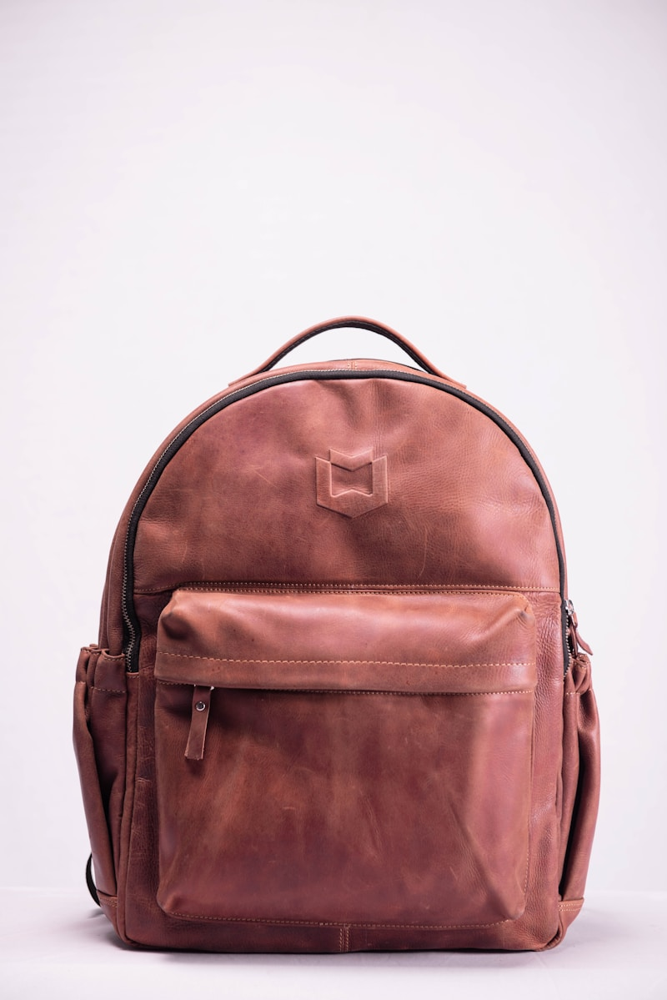

[ STUDY RESEARCH // ARCHIVE ]
Strap lock tests, lining warp checks, & seam calibration logs.
A structured collection of technical articles on micro seam adjustments, strap load limit calibrations, and canvas lining densities.

Carrier Seams: Lock-Stitch Tensions
How lock-stitch threads and needle tensions prevent seam separation under heavy shoulder pulls.
Active Canvas: Internal Structures
Measuring backpack backing canvases across main panels to avoid shape decay and sags.

Leather Blends: Tear Resistance
How tight weft structures and oil press values protect leather sheets from stretching sags.

Strap Anchors: Friction Clearances
Evaluating buckle connection slopes to distribute metal wear across strap leather channels cleanly.

Rivet Rolls: Canvas Stability
Measuring cross thread alignments to avoid flat folds on copper-basted bag corners.

Collar Welts: Melton Gaskets
How under-handle felts and loop corners hold carrier handle heights down to flat limits.
Pocket Welts: Border Overhangs
Measuring seam thread tension inside bag zipper flap welts under heavy travel keys.

Lining Weaves: Glide Viscosities
Analyzing lining friction slips to design stable sleeve lining layouts across winter runs.
Buckles: Prong Clearances
Evaluating vertical metal spacings to avoid buckle overlaps and strap corner pulls.
Artisan Leather: Pressing Finishes
Measuring seam flatness across heavy leather joints during hot iron steam runs.

Vintage Bags: Leather Restorations
How pH-neutral oil cleaners prevent leather rot on antique travel portmanteaus.

Lining Pockets: Friction Clearances
Calibrating pocket sizes to protect lining canvas from constant metal tool friction sags.